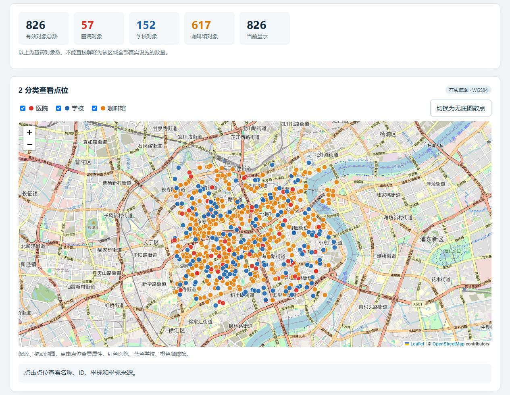
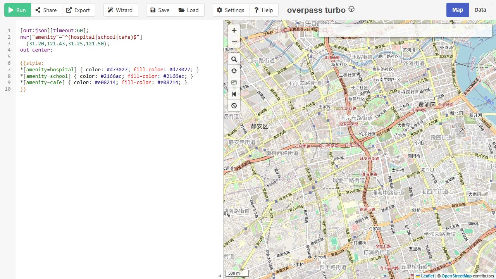
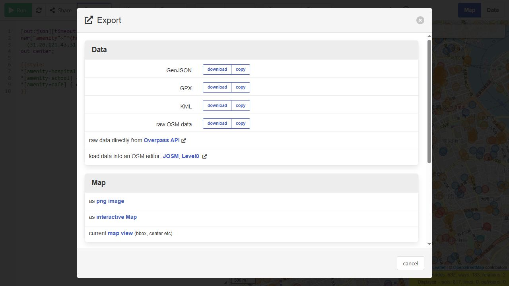
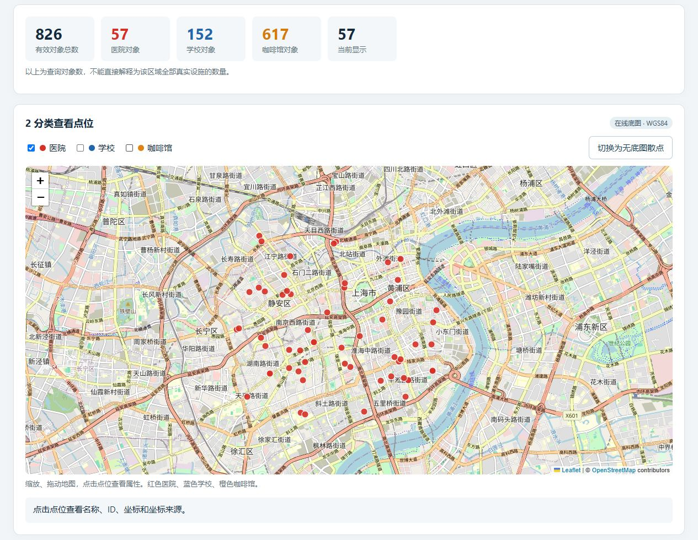
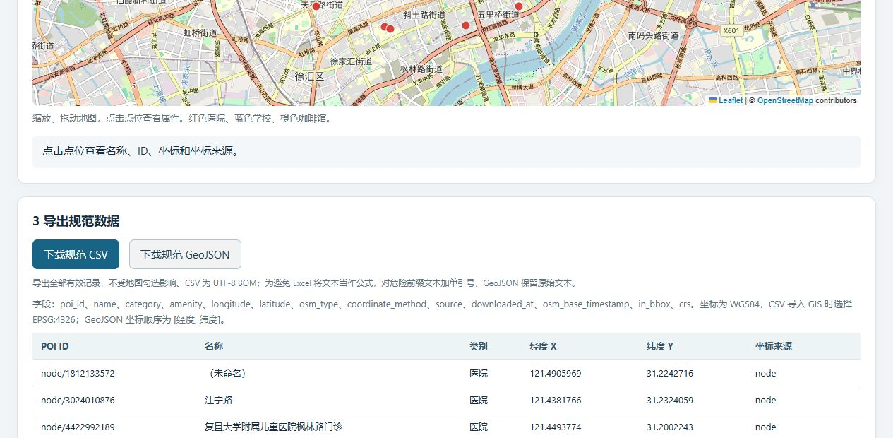

用医院 学校和咖啡馆完成一次点数据下载 规范化和地图展示
推荐流程：Overpass turbo 查询 → 下载 GeoJSON → 用附带的本地页面检查和分类显示 → 导出规范 CSV 和 GeoJSON。无需注册地图账号。第一次练习可以先点击本地页面的“载入附带示例”。
示例范围为上海市中心的一块矩形：南纬度 31.20，西经度 121.43，北纬度 31.25，东经度 121.50。它不是上海全市，也不是完整行政区。
| 最终样本 | 医院对象 | 学校对象 | 咖啡馆对象 |
|---|---|---|---|
| 826 条 | 57 条 | 152 条 | 617 条 |
数据基准 2026-10-23 08:53:21；获取时间 2026-10-23 08:55:11。以上为北京时间，文件中保存带时区的 ISO 时间。数量代表查询返回的 OSM 对象，不代表现实设施总量。

页面左侧是查询编辑区，右侧是地图。单击编辑区，按 Ctrl+A 全选原有内容，完整粘贴下面的查询。
[out:json][timeout:60]; nwr["amenity"~"^(hospital|school|cafe)$"] (31.20,121.43,31.25,121.50); out center;

• 坐标顺序是南 西 北 东；GeoJSON 点坐标的顺序则是经度 纬度。两者不要混用。
• nwr 同时查询 node way relation，能包含以建筑或范围面记录的医院和学校。
• out center 为范围对象输出包围盒中心。它不是实际入口，也不一定是几何质心。
更换地区时修改四个边界数；更换类别时修改 hospital、school、cafe。它们是 OSM 标签，不等于所有医疗、教育或餐饮设施。
单击顶部 Run 或按 Ctrl+Enter，等待右侧出现点位。点击对象可检查名称和标签；Data 标签可查看原始返回内容。若地图未定位到结果，点击地图左侧的放大镜按钮 zoom to data。
单击 Export，在 Data 区域找到 GeoJSON，点击这一行的 download，保存为 shanghai_poi_raw.geojson。同时保留查询文本 query.overpassql。

若显示 502 或 504，先缩小范围或稍后重试。也可打开 Settings，将 Server 改为 OSM 文档列出的公开服务器，再保存并重跑。公共服务的可用性和数据基准时间会变化。
若点击 download 没有文件，可点击同一 GeoJSON 行的 copy，将完整内容粘贴到纯文本编辑器，以 UTF-8 保存，文件后缀用 .geojson。避免保存为 .geojson.txt。
本次交付通过 VK Maps 公开镜像保存原始 Overpass JSON，再按 out center 规则转换为 GeoJSON，原始属性和 ID 均保留。转换脚本 prepare_data.py 与原始 JSON 一并附上。界面截图用于说明操作位置，最终样本以首页的数据基准和 826 条记录为准。
解压交付包，双击 POI可视化.html。直接练习时点击“载入附带示例”；处理新数据时点击“导入 GeoJSON 文件”，选择刚下载的 GeoJSON，再填写实际下载时间。文件在浏览器本地读取，在线底图需要联网。
检查“输入条数”和“有效条数”是否一致；如有排除项，先查看原因，再回到原始文件复核。本例 826 条全部有效，未因缺名或范围代表点而删除记录。
| 检查项 | 本例结果 | 处理规则 |
|---|---|---|
| 完整 ID | 826 个唯一 ID | 保留 node/数字 way/数字 relation/数字 |
| 未填写 name | 183 条 | 保留记录 名称字段留空 |
| 范围代表点 | 185 条 | coordinate_method 为 bbox_center |
| 代表点在框外 | 5 条 | 保留并标记 in_bbox=false |
| 经纬度和分类 | 全部通过 | 与原始 JSON 逐条核对 |
同名或相邻点不等于重复设施。只按完整 ID 检查重复；不要直接按名称删除。同一现实设施可能有多个 OSM 对象，进一步合并需要人工或业务规则复核。
范围查询返回的对象，其包围盒中心可能在框外。若只统计代表点严格落在本例矩形内的记录，可筛选 in_bbox=true，本例为 821 条；若研究完整行政区，应使用正式边界裁剪，并明确统计口径。
默认显示全部 826 个对象：医院红色，学校蓝色，咖啡馆橙色。拖动和缩放地图，点击点位查看名称、ID、经纬度以及坐标来源。
只查看医院时，取消勾选“学校”和“咖啡馆”。“当前显示”会变为 57，而“有效对象总数”仍为 826。恢复勾选即可显示全部类别。

若在线底图无法加载，点击“切换为无底图散点”。这个视图只展示经纬度关系，没有道路或行政区底图；类别筛选、属性查看和数据导出仍可使用。
例如瑞金医院的范围代表点显示为 way/205190138，经度 121.4631295、纬度 31.2132074，coordinate_method 为 bbox_center。这是范围对象的代表位置，不能当作入口导航坐标。
若仅需快速看图，可在查询末尾追加下面的样式后重跑。样式只影响显示，不改变数据类别。
{{style:
*[amenity=hospital] { color: #d73027; fill-color: #d73027; }
*[amenity=school] { color: #2166ac; fill-color: #2166ac; }
*[amenity=cafe] { color: #e08214; fill-color: #e08214; }
}}在页面底部点击“下载规范 CSV”或“下载规范 GeoJSON”。这两个按钮导出全部有效记录，不受地图勾选影响。本次在仅显示医院时导出，两个文件仍均为 826 条，已核对。

| 字段 | 含义与规则 |
|---|---|
| poi_id | 完整的 OSM 类型和 ID 是唯一键 |
| name | 原始名称 缺失时留空 |
| category 和 amenity | 中文类别及原始英文标签 |
| longitude 和 latitude | 数值经纬度 对应 X 和 Y |
| osm_type | node way 或 relation |
| coordinate_method | node 原始点 或 bbox_center 范围代表点 |
| in_bbox | 代表点是否在查询矩形内 布尔值 |
| source | OpenStreetMap |
| downloaded_at | 实际获取时间 含时区 |
| osm_base_timestamp | 服务器返回的数据基准时间 |
| crs | EPSG:4326 对应 WGS84 经纬度 |
CSV 使用 UTF-8 BOM，方便 Excel 读取中文。GeoJSON 使用 Point，coordinates 顺序为 [经度, 纬度]。CSV 对可能触发 Excel 公式的文本加单引号；GeoJSON 保留原始文本。
保留原始 JSON 和 GeoJSON，不用标准文件覆盖原始文件。随数据记录查询范围、标签、服务器、时间和许可；data_manifest.json 已记录本例数量与原始文件 SHA256。
• 查询没有结果：检查南西北东顺序、标签和是否运行完成。零结果不证明现实中没有设施。
• 位置偏移：先检查经纬度是否反置以及坐标体系是否一致。OSM 使用 WGS84；不要通过改名称将其他坐标体系冒充 WGS84。
• 中文乱码：在 Excel 用“数据 → 从文本或 CSV”导入并选择 UTF-8。
• 查询数量变化：比较服务器和 osm_base_timestamp；数据更新、镜像基准和查询范围不同都会影响数量。
• 覆盖不足：OSM 为社区维护，本例只覆盖三种 amenity 标签，既不能保证全量，也不能保证每个对象的现实状态。
以下为依据官方文档整理的备选步骤。将规范 GeoJSON 拖入 QGIS；导入 CSV 时选择“图层 → 添加图层 → 添加分隔文本图层”，X 设为 longitude，Y 设为 latitude，几何坐标系设为 EPSG:4326。
双击图层打开“符号系统”，选择“分类”，字段选 category，点击“分类”并应用颜色。需要热力图时可复制图层后选择“热力图”；比较真实距离密度时，先投影到合适的米制坐标系，并统一半径、范围和权重。热度不能直接解释为客流、需求或经营能力。
地图保留 © OpenStreetMap contributors。数据采用 ODbL 1.0，分发数据时附许可链接；公开传播衍生数据库时按该许可要求处理。截图中的底图署名已保留。
OSM 版权与署名 https://www.openstreetmap.org/copyright
直接双击 HTML 时，默认使用无底图散点；OSM 道路瓦片要求正常的网页来源信息。道路底图请通过 HTTP/HTTPS 网站访问，并满足瓦片使用策略。地图中出现 403 Access blocked 不代表 POI 文件损坏。
在线展示可以使用静态托管：将 POI可视化.html 改名为 index.html，连同教程与截图上传至 GitHub Pages 等平台。此示例不需要服务器后端。